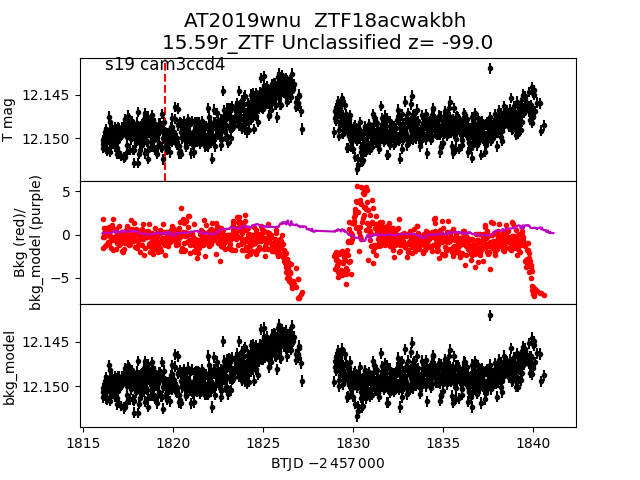

all transients in sector19 (30 total)
Each figure has three panels. The top panel shows the transient light curve, the middle panel shows the local background (estimated in an annulus), and the bottom panel shows a "background-model corrected" light curve. Details about the background model are in the README.
The vertical red line marks the time of discovery reported to TNS. Other useful metadata from TNS is in the figure title.
Note that the top and bottom panel are in magnitudes, while the middle panel is in differential flux units. The magnitudes are calibrated to the flux in the reference image used for image subtraction. Thus, flux from the host galaxy is included in these magnitudes.
3-sigma upper limits are plotted as triangles with no errorbars. A typical limiting magnitude is 19.6 in 30 minutes or 18.4 in 200 seconds (for low backgrounds).
The links allow you to download the light curve data as a text file.
More details in the README.
2019xtf 2019wve 2019wey 2019xcn 2019wbl 2019wnu  2019wwo 2019xhk 2019wmw 2019wla 2019wio 2019xao 2019vuj 2019wvo 2019wrr 2019vzv 2019wuu 2019whd 2019wjj 2019xar 2019wim 2019wbk 2019wxp 2019xaq 2019wjl 2019wle 2019wkz 2019wbr 2019xdl 2019xip